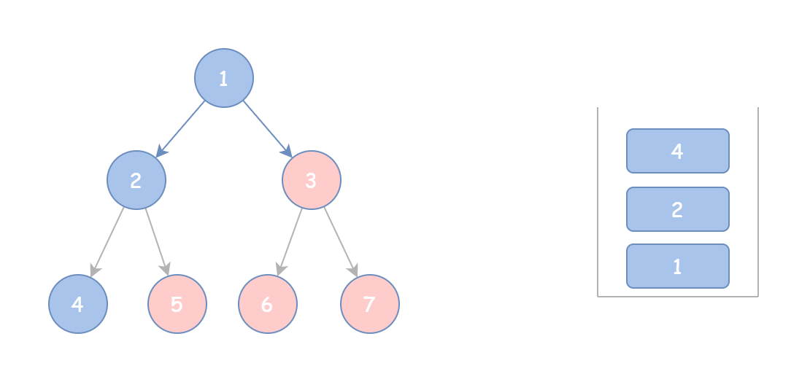

目的：为了备战蓝桥杯（4 月 12 日）和夏令营预推免的机试。
每一题目标：彻底弄懂该题思路。
# 哈希表
简单：
LeetCode—— 罗马数字转整数：https://leetcode.cn/problems/roman-to-integer/?envType=problem-list-v2&envId=hash-table
LeetCode—— 多数元素：https://leetcode.cn/problems/majority-element/?envType=problem-list-v2&envId=hash-table
LeetCode—— 两数之和：1. 两数之和 - 力扣（LeetCode）
LeetCode—— 环形链表：141. 环形链表 - 力扣（LeetCode）
LeetCode—— 相交链表：160. 相交链表 - 力扣（LeetCode）
LeetCode—— 快乐数：202. 快乐数 - 力扣（LeetCode）
LeetCode—— 同构字符串：205. 同构字符串 - 力扣（LeetCode）
LeetCode—— 存在重复元素：217. 存在重复元素 - 力扣（LeetCode）
中等：
LeetCode—— 字母异位词分组：49. 字母异位词分组 - 力扣（LeetCode）🔥
LeetCode—— 最长连续序列：128. 最长连续序列 - 力扣（LeetCode）🔥
# 双指针
相向双指针
LeetCode—— 反转字符串（优化相向指针）：https://leetcode.cn/problems/reverse-string/description/?envType=problem-list-v2&envId=two-pointers
LeetCode—— 验证回文串（相向指针）：https://leetcode.cn/problems/valid-palindrome/?envType=problem-list-v2&envId=two-pointers
LeetCode—— 回文链表（相向指针）：https://leetcode.cn/problems/palindrome-linked-list/description/?envType=problem-list-v2&envId=two-pointers
LeetCode—— 盛最多水的容器（暴力必超时，相向指针）：11. 盛最多水的容器 - 力扣（LeetCode）🔥
LeetCode—— 三数之和（枚举与相向指针的结合）：15. 三数之和 - 力扣（LeetCode）🔥
原地修改
LeetCode—— 移动零（快慢指针）：283. 移动零 - 力扣（LeetCode）
LeetCode—— 删除有序数组中的重复项：26. 删除有序数组中的重复项 - 力扣（LeetCode）
LeetCode—— 移除元素：27. 移除元素 - 力扣（LeetCode）
其他
LeetCode—— 找出字符串中第一个匹配项的下标：28. 找出字符串中第一个匹配项的下标 - 力扣（LeetCode）
LeetCode—— 合并两个有序数组（三指针）：https://leetcode.cn/problems/merge-sorted-array/?envType=problem-list-v2&envId=two-pointers 🔥
LeetCode—— 反转字符串中的元音字母（双向指针）：345. 反转字符串中的元音字母 - 力扣（LeetCode）
# 滑动窗口
定长滑窗
LeetCode—— 定长子串中元音的最大数目（最佳定长滑窗入门题）：https://leetcode.cn/problems/maximum-number-of-vowels-in-a-substring-of-given-length/description/
Summary
定长滑窗模板：
入 —— 更新 —— 出
- 入：下标为 i 的元素进入窗口，更新相关统计量。如果 i<k−1 则重复第一步，目的是为了让窗口全部进入。窗口全部进入后，循环下标值 i==k-1，开始做更新的内容。
- 更新：更新答案。一般是更新最大值 / 最小值。
- 出：下标为 i−k+1 的尾部元素离开窗口，更新相关统计量。
class Solution: | |
def maxVowels(self, s: str, k: int) -> int: | |
ans = vowel = 0 | |
for i, c in enumerate(s): | |
# 1. 进入窗口 | |
if c in "aeiou": | |
vowel += 1 | |
if i < k - 1: # 窗口大小不足 k | |
continue | |
# 2. 更新答案 | |
ans = max(ans, vowel) | |
# 3. 离开窗口 | |
if s[i - k + 1] in "aeiou": | |
vowel -= 1 | |
return ans |
LeetCode—— 子数组最大平均数 I （定长滑窗）：https://leetcode.cn/problems/maximum-average-subarray-i/description/?envType=problem-list-v2&envId=sliding-window
LeetCode—— 大小为 K 且平均值大于等于阈值的子数组数目（定长滑窗练手题）：https://leetcode.cn/problems/number-of-sub-arrays-of-size-k-and-average-greater-than-or-equal-to-threshold/description/
LeetCode—— 半径为 K 的子数组平均值（定长滑窗检验入门题）：https://leetcode.cn/problems/k-radius-subarray-averages/description/
LeetCode—— 得到 K 个黑块的最少涂色次数：https://leetcode.cn/problems/minimum-recolors-to-get-k-consecutive-black-blocks/description/
LeetCode—— 存在重复元素 II （进阶定长滑窗）：219. 存在重复元素 II - 力扣（LeetCode）
LeetCode—— 拆炸弹（定长滑窗）：1652. 拆炸弹 - 力扣（LeetCode）🔥
LeetCode—— 找到一个数字的 K 美丽值（定长滑窗）：2269. 找到一个数字的 K 美丽值 - 力扣（LeetCode）🔥
变长滑窗
LeetCode—— 无重复字符的最长子串（变长滑窗入门题）：https://leetcode.cn/problems/longest-substring-without-repeating-characters/description/?envType=study-plan-v2&envId=top-100-liked
Summary
变长滑窗的核心思想是：维护一个有条件的滑动窗口。滑窗右端点右移的目的是为了扩大窗口，破坏条件。滑窗左侧端点左移的目的是为了维护这个条件，直至条件成立。下面是与哈希集合结合的滑窗去重模板（学习自灵茶山艾府）：
class Solution: | |
def lengthOfLongestSubstring(self, s: str) -> int: | |
table = set() | |
left = maxValue = 0 | |
for right, c in enumerate(s): | |
while c in table: | |
table.remove(s[left]) | |
left += 1 | |
table.add(c) | |
maxValue = max(maxValue, right - left + 1) | |
return maxValue |
变长滑窗需要额外的一个指针或者一个别的手段记录滑窗尾部位置。
LeetCode—— 最长和谐子序列（变长滑窗）：594. 最长和谐子序列 - 力扣（LeetCode）
LeetCode—— 每个字符最多出现两次的最长子字符串（变长滑窗）：https://leetcode.cn/problems/maximum-length-substring-with-two-occurrences/description/
LeetCode—— 重复的 DNA 序列：187. 重复的 DNA 序列 - 力扣（LeetCode）
LeetCode—— 长度最小的数组（变长滑窗）：209. 长度最小的子数组 - 力扣（LeetCode）🔥
LeetCode—— 删掉一个元素以后全为 1 的最长子数组（考验变长滑窗维护条件的选择）：https://leetcode.cn/problems/longest-subarray-of-1s-after-deleting-one-element/description/ 🔥
# 二分算法
二分查找
LeetCode—— 在排序数组中查找元素的第一个和最后一个位置（二分查找入门题）：34. 在排序数组中查找元素的第一个和最后一个位置 - 力扣（LeetCode）
Summary
（学习自灵茶山艾府）
- 闭区间二分查找模板：
class Solution: | |
# lower_bound 返回最小的满足 nums [i] >= target 的下标 i | |
# 如果数组为空，或者所有数都 < target，则返回 len (nums) | |
# 要求 nums 是非递减的，即 nums [i] <= nums [i + 1] | |
def lower_bound(self, nums: List[int], target: int) -> int: | |
left, right = 0, len(nums) - 1 # 闭区间 [left, right] | |
while left <= right: # 区间不为空 | |
# 循环不变量： | |
# nums[left-1] < target | |
# nums[right+1] >= target | |
mid = (left + right) // 2 | |
if nums[mid] >= target: | |
right = mid - 1 # 范围缩小到 [left, mid-1] | |
else: | |
left = mid + 1 # 范围缩小到 [mid+1, right] | |
# 循环结束后 left = right+1 | |
# 此时 nums [left-1] < target 而 nums [left] = nums [right+1] >= target | |
# 所以 left 就是第一个 >= target 的元素下标 | |
return left |
- 开区间二分查找模板：
class Solution: | |
# lower_bound 返回最小的满足 nums [i] >= target 的下标 i | |
# 如果数组为空，或者所有数都 < target，则返回 len (nums) | |
# 要求 nums 是非递减的，即 nums [i] <= nums [i + 1] | |
def lower_bound(self, nums: List[int], target: int) -> int: | |
left, right = -1, len(nums) # 开区间 (left, right) | |
while left + 1 < right: # 区间不为空 | |
mid = (left + right) // 2 | |
# 循环不变量： | |
# nums[left] < target | |
# nums[right] >= target | |
if nums[mid] >= target: | |
right = mid # 范围缩小到 (left, mid) | |
else: | |
left = mid # 范围缩小到 (mid, right) | |
# 循环结束后 left+1 = right | |
# 此时 nums [left] < target 而 nums [right] >= target | |
# 所以 right 就是第一个 >= target 的元素下标 | |
return right |
LeetCode—— 搜索插入位置（闭区间二分查找）：https://leetcode.cn/problems/search-insert-position/description/
LeetCode—— 二分查找：https://leetcode.cn/problems/binary-search/description/
LeetCode—— 寻找比目标字母大的最小字母（左闭右开区间二分查找）：744. 寻找比目标字母大的最小字母 - 力扣（LeetCode）
LeetCode—— 正整数和负整数的最大计数（重用二分查找）：2529. 正整数和负整数的最大计数 - 力扣（LeetCode）
LeetCode—— 两个数组间的距离值（二分查找）：1385. 两个数组间的距离值 - 力扣（LeetCode） 🔥
LeetCode—— 咒语和药水的成功对数（二分查找）：2300. 咒语和药水的成功对数 - 力扣（LeetCode）
二分答案：
LeetCode—— 使结果不超过阈值的最小除数（二分答案求最小入门题）：https://leetcode.cn/problems/find-the-smallest-divisor-given-a-threshold/ 🔥
Summary
（学习自灵茶山艾府）
- 当 a 和 b 都是正整数时，向上取整可以转换为向下取整，公式如下：
- 只要某个数满足的表达式是单调的，我们就能对这个数进行二分查找。
- 因为 python 的 ceil 向上取整函数计算出的是浮点数，会有精度误差，因此尽可能转换为向下取整函数 floor。
LeetCode—— 完成旅途的最少时间（二分答案）：https://leetcode.cn/problems/minimum-time-to-complete-trips/ 🔥
# 栈
基础：
LeetCode—— 比较含退格的字符串（模拟栈）：844. 比较含退格的字符串 - 力扣（LeetCode）
LeetCode—— 棒球比赛（模拟栈）：682. 棒球比赛 - 力扣（LeetCode）
LeetCode—— 用栈操作构建数组（无脑题）：1441. 用栈操作构建数组 - 力扣（LeetCode）
LeetCode—— 从字符串中移除星号（秒杀题）：https://leetcode.cn/problems/removing-stars-from-a-string/
LeetCode—— 设计浏览器历史记录（用于检验入门的题）（指针与栈结合）：1472. 设计浏览器历史记录 - 力扣（LeetCode）
LeetCode—— 验证栈序列（双指针与栈结合）：946. 验证栈序列 - 力扣（LeetCode）
LeetCode—— 有效的括号：20. 有效的括号 - 力扣（LeetCode） 🔥
LeetCode—— 计算字符串的镜像分数：3412. 计算字符串的镜像分数 - 力扣（LeetCode）🔥
LeetCode—— 简化路径：https://leetcode.cn/problems/simplify-path/ 🔥
# 枚举
同一道题目也会反复出现，比如下面的两数之和出现于前面的哈希表。
LeetCode—— 两数之和（枚举右，维护左 + 哈希表）：https://leetcode.cn/problems/two-sum/description/
Summary
（学习自灵茶山艾府）
枚举右，维护左
双变量问题如： 或者。可以枚举右边的 y，找是否有 满足。通常与哈希表结合。
LeetCode—— 好数对的数目（枚举右，维护左 + 哈希表）：https://leetcode.cn/problems/number-of-good-pairs/description/
LeetCode—— 可互换矩形的组数（枚举右，维护左 + 哈希表）：https://leetcode.cn/problems/number-of-pairs-of-interchangeable-rectangles/description/
# 前缀和
基础：LeetCode—— 区域和检索 —— 数组不可变（前缀和入门模板题）：https://leetcode.cn/problems/range-sum-query-immutable/
Summary
前缀和我在一篇博文有详细介绍原理，于是不再总结。
这里注意到 Python 有一个 accumulate 函数，这个函数可以计算一个数组对应的前缀和数组。有一个 initial 参数，将其设为 0，相当于在前缀和数组前增加一个 0 项：
from itertools import accumulate | |
# 创建一个列表 | |
data = [1, 2, 3, 4, 5] | |
# 使用 accumulate 计算前缀和 | |
result1 = list(accumulate(data)) | |
result2 = list(accumulate(data, initial=0)) | |
# 输出结果 | |
print(result1) # 输出：[1, 3, 6, 10, 15] | |
print(result2) # 输出：[0, 1, 3, 6, 10, 15] |
LeetCode—— 变长子数组求和：https://leetcode.cn/problems/sum-of-variable-length-subarrays/
LeetCode—— 统计范围内的元音字符串数：https://leetcode.cn/problems/count-vowel-strings-in-ranges/
LeetCode—— 特殊数组 II（数组奇偶性与前缀和）：https://leetcode.cn/problems/special-array-ii/ 🔥
前缀和与哈希表：
Summary
前缀和两次遍历示例写法：
class Solution: | |
def subarraySum(self, nums: List[int], k: int) -> int: | |
s = [0] * (len(nums) + 1) | |
for i, x in enumerate(nums): | |
s[i + 1] = s[i] + x | |
ans = 0 | |
cnt = defaultdict(int) | |
for sj in s: | |
ans += cnt[sj - k] | |
cnt[sj] += 1 | |
return ans |
一遍遍历示例写法（由于遍历 nums 会从 s [1] 开始计算，所以要单独处理 s [0]=0）：
class Solution: | |
def subarraySum(self, nums: List[int], k: int) -> int: | |
ans = s = 0 | |
cnt = defaultdict(int) | |
cnt[0] = 1 # s [0]=0 单独统计 | |
for x in nums: | |
s += x | |
ans += cnt[s - k] | |
cnt[s] += 1 | |
return ans |
LeetCode—— 和为 K 的子数组（启蒙题，值得反复品味）：https://leetcode.cn/problems/subarray-sum-equals-k/description/
LeetCode—— 和相同的二元子数组：https://leetcode.cn/problems/binary-subarrays-with-sum/description/
LeetCode—— 和为奇数的子数组数目（区间奇偶与前缀和）：https://leetcode.cn/problems/number-of-sub-arrays-with-odd-sum/ 🔥
Summary
前缀和奇偶性与数组区间和的关系：
如果两个前缀和的奇偶性不同（一个是偶数，一个是奇数），它们之间的子数组和一定是奇数。
LeetCode—— 和可被 K 整除的子数组（余数哈希 + 前缀和）：https://leetcode.cn/problems/subarray-sums-divisible-by-k/
LeetCode—— 连续的子数组和（在前一道题基础上加入区间要求）：https://leetcode.cn/problems/continuous-subarray-sum/description/
LeetCode—— 连续数组（将不定和转为定和）：https://leetcode.cn/problems/contiguous-array/description/ 🔥
Summary
本题可以用纯数学的方式避免用 if-else 判断数组值：
令前缀和为 prev，nums [i] 是数组值，如果要实现遇到 nums [i] 为 1 则 prev+=1，而遇到 nums [i] 为 - 1 则 prev-=1，用：
prev += nums[i] * 2 - 1 |
替代：
if nums[i] == 1: | |
prev += 1 | |
else: | |
prev -= 1 |
为什么会得到这个公式？我们重新思考一下，其实无外乎可以抽象为：prev += f (nums [i])，这样就能避免用 if-else。那么这个函数 f 如何得到呢？这时候就要考虑 nums [i] 的值和目标 f (nums [i]) 的值。发现 nums [i] 和 f (nums [i]) 都可以分别抽象为一个向量，然后就变成了：
一般 f 是一个线性变换，可以认为 $$f=wx+b$$，根据线性代数的知识，f 也是一个向量，那么就有：
利用矩阵乘法，能够知道 a=2，b=-1，即 f=2x-1。
LeetCode—— 统计美丽子数组数目：https://leetcode.cn/problems/count-the-number-of-beautiful-subarrays/description/ 🔥
距离和
LeetCode—— 有序数组中差绝对值之和：https://leetcode.cn/problems/sum-of-absolute-differences-in-a-sorted-array/ 🔥
前缀异或和
LeetCode—— 构建回文串检测：https://leetcode.cn/problems/can-make-palindrome-from-substring/ 🔥
# 网格图
深度优先搜索 DFS：LeetCode—— 岛屿数量（入门题，水平垂直方向）：https://leetcode.cn/problems/number-of-islands/description/
LeetCode—— 岛屿的最大面积：https://leetcode.cn/problems/max-area-of-island/description/
LeetCode—— 水域大小（加入对角线方向）：https://leetcode.cn/problems/pond-sizes-lcci/description/
LeetCode—— 主题空间（边界不合法情况）：https://leetcode.cn/problems/YesdPw/description/ 🔥
LeetCode—— 岛屿的周长：https://leetcode.cn/problems/island-perimeter/description/
# 二叉树
遍历二叉树：LeetCode—— 二叉树的前序遍历：https://leetcode.cn/problems/binary-tree-preorder-traversal/
Summary
二叉树遍历的递归方式：
# 假设二叉树类定义如： | |
# class TreeNode: | |
# def __init__(self, val=0, left=None, right=None): | |
# self.val = val | |
# self.left = left | |
# self.right = right | |
# 前序遍历 | |
def preorderTraversal(self, root: Optional[TreeNode]) -> List[int]: | |
ans = [] | |
def dfs(root): | |
nonlocal ans | |
if not root: | |
return | |
ans.append(root.val) | |
dfs(root.left) | |
dfs(root.right) | |
dfs(root) | |
return ans | |
# 中序遍历 | |
def preorderTraversal(self, root: Optional[TreeNode]) -> List[int]: | |
ans = [] | |
def dfs(root): | |
nonlocal ans | |
if not root: | |
return | |
dfs(root.left) | |
ans.append(root.val) # 只变化了这行代码的位置 | |
dfs(root.right) | |
dfs(root) | |
return ans | |
# 后序遍历 | |
def preorderTraversal(self, root: Optional[TreeNode]) -> List[int]: | |
ans = [] | |
def dfs(root): | |
nonlocal ans | |
if not root: | |
return | |
dfs(root.left) | |
dfs(root.right) | |
ans.append(root.val) # 只变化了这行代码的位置 | |
dfs(root) | |
return ans |
下面看借用栈实现迭代方式的二叉树前序遍历，学习自腐烂的橘子：
整体思路是：
- 初始化栈，将根节点入栈
- 当栈不为空时，弹出栈顶元素
- 如果栈顶元素右子树不为空，那么将右子树压入栈中
- 如果栈顶元素左子树不为空，那么将左子树压入栈中
前序遍历的迭代方式代码为：
def preorderTraversal(self, root: Optional[TreeNode]) -> List[int]: | |
if not root: | |
return [] | |
stack, ans = [root], [] | |
while stack: | |
node = stack.pop() | |
if node: | |
ans.append(node.val) | |
if node.right: | |
stack.append(node.right) | |
if node.left: | |
stack.append(node.left) | |
return ans |
为什么弹出栈顶节点后，先将右子树压入栈中？因为这是前序遍历，而且栈是先入后出，如果我们想要做到遍历 “根 -> 左子树 -> 右子树”，那么就要先把右子树压入栈中，再压入左子树。这样后入的左子树就能先被弹出遍历。
这是一种方便理解的思路，当然还有一种模板式的迭代前序遍历思路，也学习自腐烂的橘子：
- 先将根节点 cur 和所有的左子树压入栈并加入结果中，直至 cur 为空。
- 然后每弹出一个栈顶元素 tmp，就到达它的右子树，再将这个节点当作 cur，继续按照前面的步骤再来一遍，直至栈为空。
- 代码如下：

def preorderTraversal(self, root: Optional[TreeNode]) -> List[int]: | |
if not root: | |
return [] | |
cur, stack, ans = root, [], [] | |
while cur or stack: | |
while cur: | |
ans.append(cur.val) | |
stack.append(cur) | |
cur = cur.left | |
tmp = stack.pop() | |
cur = tmp.right | |
return ans |
这样，首先确保根节点和左子树首先进入栈中，此时遍历到树底部，然后再一一从栈中取出节点，并到达右子树继续遍历。
LeetCode—— 二叉树的中序遍历：https://leetcode.cn/problems/binary-tree-inorder-traversal/description/
Summary
二叉树的迭代版本中序遍历：
def inorderTraversal(self, root: Optional[TreeNode]) -> List[int]: | |
if not root: | |
return [] | |
cur, stack, ans = root, [], [] | |
while cur or stack: | |
while cur: | |
stack.append(cur) | |
cur = cur.left | |
tmp = stack.pop() | |
ans.append(tmp.val) # 同样只移动了这行代码 | |
cur = tmp.right | |
return ans |
当内层 while 循环结束时，说明遍历到了二叉树最底层。
LeetCode—— 二叉树的后序遍历：https://leetcode.cn/problems/binary-tree-postorder-traversal/description/
Summary
二叉树的 “后序遍历”，本质上是二叉树 “从右侧开始的前序遍历”。
你可以尝试对一个二叉树进行前序遍历，然后反向所得到的列表结果，就是二叉树的后序遍历。按照这个思路，则有该代码：
def postorderTraversal(self, root: Optional[TreeNode]) -> List[int]: | |
if not root: | |
return [] | |
cur, stack, ans = root, [], [] | |
while cur or stack: | |
while cur: | |
ans.append(cur.val) | |
stack.append(cur) | |
cur = cur.right | |
tmp = stack.pop() | |
cur = tmp.left | |
return ans[::-1] |
LeetCode—— 叶子相似的树：https://leetcode.cn/problems/leaf-similar-trees/description/ 🔥
自顶向下 DFS：
Summary
自顶向下 DFS 通常是在 [递] 的过程中维护一个值。
LeetCode—— 二叉树的最大深度（入门题）：https://leetcode.cn/problems/maximum-depth-of-binary-tree/description/
LeetCode—— 二叉树的最小深度（入门题）：https://leetcode.cn/problems/minimum-depth-of-binary-tree/description/
LeetCode—— 路径总和：https://leetcode.cn/problems/path-sum/description/
LeetCode—— 求根节点到叶节点数字之和（向下传递累积值）：https://leetcode.cn/problems/sum-root-to-leaf-numbers/description/
LeetCode—— 二叉树的右视图（灵活运用 DFS）：https://leetcode.cn/problems/binary-tree-right-side-view/
LeetCode—— 统计二叉树中好节点的数目（向下传递最大值）：https://leetcode.cn/problems/count-good-nodes-in-binary-tree/
LeetCode—— 二叉树中的伪回文路径：https://leetcode.cn/problems/pseudo-palindromic-paths-in-a-binary-tree/ 🔥
自底向上 DFS：
Summary
在 [归] 的过程中进行计算。
入门自底向上 DFS 很容易，但是掌握好还是稍有难度的。
LeetCode—— 二叉树的最大深度：https://leetcode.cn/problems/maximum-depth-of-binary-tree/
LeetCode—— 二叉树的最小深度：https://leetcode.cn/problems/minimum-depth-of-binary-tree/
LeetCode—— 单值二叉树（掌握自底向上 DFS 的条件判断）：https://leetcode.cn/problems/univalued-binary-tree/ 🔥
LeetCode—— 相同的树（先讨论根节点再讨论左右子树）：https://leetcode.cn/problems/same-tree/
LeetCode—— 对称二叉树：https://leetcode.cn/problems/symmetric-tree/
LeetCode—— 翻转等价二叉树：https://leetcode.cn/problems/flip-equivalent-binary-trees/ 🔥
LeetCode—— 找出克隆二叉树中的相同节点（在二叉树中递归寻找目标值）： https://leetcode.cn/problems/find-a-corresponding-node-of-a-binary-tree-in-a-clone-of-that-tree/
LeetCode—— 平衡二叉树（利用非法值快速回到递归入口）：https://leetcode.cn/problems/balanced-binary-tree/
LeetCode—— 翻转二叉树：https://leetcode.cn/problems/invert-binary-tree/ 🔥
LeetCode—— 合并二叉树：https://leetcode.cn/problems/merge-two-binary-trees/ 🔥
二叉树上的回溯
LeetCode—— 二叉树的所有路径：https://leetcode.cn/problems/binary-tree-paths/description/ 🔥
LeetCode—— 路径总和 II（思路同二叉树的所有路径）：https://leetcode.cn/problems/path-sum-ii/
LeetCode—— 路径总和 III：https://leetcode.cn/problems/path-sum-iii/description/
# 贪心
从最大 / 最小开始贪心：
LeetCode—— 重新分装苹果（排序 + 贪心，无脑题）：https://leetcode.cn/problems/apple-redistribution-into-boxes/description/
LeetCode—— 装满石头的背包的最大数量（排序贪心，同无脑题）：https://leetcode.cn/problems/maximum-bags-with-full-capacity-of-rocks/
LeetCode—— 雪糕的最大数量（继续感受无脑贪心）：https://leetcode.cn/problems/maximum-ice-cream-bars/
LeetCode—— K 次取反后最大化的数组和（检验排序贪心的真正入门题）：https://leetcode.cn/problems/maximize-sum-of-array-after-k-negations/ 🔥
LeetCode—— 不同整数的最少数目（哈希 + 排序贪心）：https://leetcode.cn/problems/least-number-of-unique-integers-after-k-removals/
Summary
小技巧 —— 用 collections.Counter 统计一个序列或可迭代对象每个迭代对象的次数，基本用法：
from collections import Counter | |
# 使用字符串初始化 Counter | |
counter = Counter("mississippi") | |
print(counter) # 输出: Counter ({'i': 4, 's': 4, 'p': 2, 'm': 1}) | |
# 使用列表初始化 Counter | |
counter = Counter(list("mississippi")) | |
print(counter) # 输出: Counter ({'i': 4, 's': 4, 'p': 2, 'm': 1}) |
LeetCode—— 非递增顺序的最小子序列（依然是排序贪心）：https://leetcode.cn/problems/minimum-subsequence-in-non-increasing-order/
LeetCode—— 将数组分成最小总代价的子数组 I（纯排序题）：https://leetcode.cn/problems/divide-an-array-into-subarrays-with-minimum-cost-i/
LeetCode—— 数组大小减半：https://leetcode.cn/problems/reduce-array-size-to-the-half/ 🔥
LeetCode—— 卡车上的最大单元数：https://leetcode.cn/problems/maximum-units-on-a-truck/ 🔥
LeetCode—— 幸福值最大化的选择方案：https://leetcode.cn/problems/maximize-happiness-of-selected-children/ 🔥
单序列配对
LeetCode—— 打折购买糖果的最小开销：https://leetcode.cn/problems/minimum-cost-of-buying-candies-with-discount/ 🔥
LeetCode—— 数组拆分：https://leetcode.cn/problems/array-partition/ 🔥
LeetCode—— 数组中最大数对和的最小值：https://leetcode.cn/problems/minimize-maximum-pair-sum-in-array/ 🔥
# 位运算
基础
LeetCode—— 仅含置位位的最小整数（初步从二进制的视角解决问题）：https://leetcode.cn/problems/smallest-number-with-all-set-bits/description/
Summary
- Python 用方法 bit_length () 计算二进制长度，这里的二进制长度是从左数第一个 1 开始算的，比如 100 长度是 3，而 010 计算为 2。
灵茶山艾府对位运算和集合的关系总结相当深入浅出，推荐当入门资料首先学习：https://leetcode.cn/discuss/post/3571304/cong-ji-he-lun-dao-wei-yun-suan-chang-ji-enve/
LeetCode—— 使两个整数相等的位更改次数（集合与位操作的相互转换）：https://leetcode.cn/problems/number-of-bit-changes-to-make-two-integers-equal/description/
Summary
- 交集对应位运算的与，python 代码是 &，不是 and，and 是条件逻辑判断时所用，返回真假，and 是与运算操作符，返回与运算运算结果。
- 对应地，并集对应或，python 代码为 |，补集对应非，python 代码为～。
- 集合异或的 python 代码是 ^，同或是异或的逆运算，对应 python 操作是～(a^b)。
- 注意，== 运算符优先级高于位运算运算符，应该适当引入括号。
LeetCode—— 根据数字二进制下 1 的数目排序（哈希表 + 位运算）：https://leetcode.cn/problems/number-of-bit-changes-to-make-two-integers-equal/description/ 🔥
LeetCode—— 汉明距离（一行代码搞定）：https://leetcode.cn/problems/hamming-distance/
LeetCode—— 转换数字的最少位翻转次数：https://leetcode.cn/problems/minimum-bit-flips-to-convert-number/
LeetCode—— 将数字变成 0 的操作次数（进一步感受位操作）：https://leetcode.cn/problems/number-of-steps-to-reduce-a-number-to-zero/description/
LeetCode—— 数字的补数：https://leetcode.cn/problems/number-complement/
LeetCode—— 十进制整数的反码（反码知识）：https://leetcode.cn/problems/complement-of-base-10-integer/
Summary
- 当长度为 m 时，可表示的最大二进制数值是 2 的 m 次方 - 1。
- 取反操作，相当于与同长度，全 1 二进制做异或。
- 0 的反码是 1。
LeetCode—— 二进制间距：https://leetcode.cn/problems/binary-gap/description/ 🔥
Summary
- 求集合最大元素的下标： s.bit_length () - 1。
- 求二进制最后一个 1 的下标，被称为求二进制的 lowbit 算法。s=101100，则 s 的 lowbit 表示 s & -s 为 000100。所以，(s & -s).bit_length () - 1 可以用于求 s 的最后一个 1 的下标。本质上，lowbit 表示是将最后一个 1 前的所有位置零。
异或的性质
LeetCode—— 数组异或操作：https://leetcode.cn/problems/xor-operation-in-an-array/
# 回溯
入门回溯
LeetCode—— 电话号码的字母组合：https://leetcode.cn/problems/letter-combinations-of-a-phone-number/description/
- 其实应该还要加上二叉树那块的三道回溯题的，这样才算构成入门回溯了。
- 回溯可以是在递归外通过一个全局的变量，如列表，存储递归产生的搜索树上当前的路径，也可以是 DFS 的过程中传递一个统计参数，不需要手写恢复现场，只要本层递归结束自然会回退到上一层递归的值，这个就是优化后的回溯。
子集型回溯
LeetCode—— 子集（经典题 —— 从输入的视角）：https://leetcode.cn/problems/subsets/description/
LeetCode—— 找出所有子集的异或总和再求和（优化的回溯）：https://leetcode.cn/problems/sum-of-all-subset-xor-totals/description/
LeetCode—— 字母大小写全排列（经典题 —— 从答案的视角）：https://leetcode.cn/problems/letter-case-permutation/
LeetCode—— 等积子集的划分方案（从输入的视角）：https://leetcode.cn/problems/partition-array-into-two-equal-product-subsets/description/
LeetCode—— 统计按位或能得到最大值的子集数目：https://leetcode.cn/problems/count-number-of-maximum-bitwise-or-subsets/description/
# 链表
遍历链表
LeetCode—— 二进制链表转整数：https://leetcode.cn/problems/convert-binary-number-in-a-linked-list-to-integer/description/
LeetCode—— 找出临界点之间的最小和最大距离：https://leetcode.cn/problems/find-the-minimum-and-maximum-number-of-nodes-between-critical-points/description/
删除链表节点
LeetCode—— 移除链表元素：https://leetcode.cn/problems/remove-linked-list-elements/description/
反转链表
LeetCode—— 反转链表：https://leetcode.cn/problems/reverse-linked-list/
插入节点
LeetCode—— 在链表中插入最大公约数：https://leetcode.cn/problems/insert-greatest-common-divisors-in-linked-list/description/
# 动态规划
选与不选、枚举哪个。
入门 DP
LeetCode—— 打家劫舍（经典 —— 记忆化搜索）：https://leetcode.cn/problems/house-robber/description/
LeetCode—— 爬楼梯（从记忆化搜索到递推）：https://leetcode.cn/problems/climbing-stairs/description/
LeetCode—— 使用最小花费爬楼梯（理解状态的定义）：https://leetcode.cn/problems/min-cost-climbing-stairs/
LeetCode—— 组合总和 IV（爬楼梯拓展）：https://leetcode.cn/problems/combination-sum-iv/description/
LeetCode—— 统计构造好字符串的方案数：https://leetcode.cn/problems/count-ways-to-build-good-strings/description/
Warning
- Python 存储数值虽然不会溢出，但是随着数值增大，计算时间、存储空间也会变大，不再是 O (1) 的，容易导致一些题目超时、爆内存。
- 灵茶山艾府讲解加减乘除与模运算的关系，有一些重要的结论需要了解：https://leetcode.cn/discuss/post/3584387/fen-xiang-gun-mo-yun-suan-de-shi-jie-dan-7xgu/
- 比如，对一个和式或者积式取模，如果拆开和式与积式，得到分量，对这些分量取模后，继续组成和式与积式，结果与原来一样。这提示我们，我们可以在计算过程中（例如循环），对加法和乘法的结果取模，而不是在循环结束后再取模。
LeetCode—— 打家劫舍 II：https://leetcode.cn/problems/house-robber-ii/description/
LeetCode—— 统计放置房子的方式数：https://leetcode.cn/problems/count-number-of-ways-to-place-houses/description/
LeetCode—— 最大子数组和：https://leetcode.cn/problems/maximum-subarray/description/